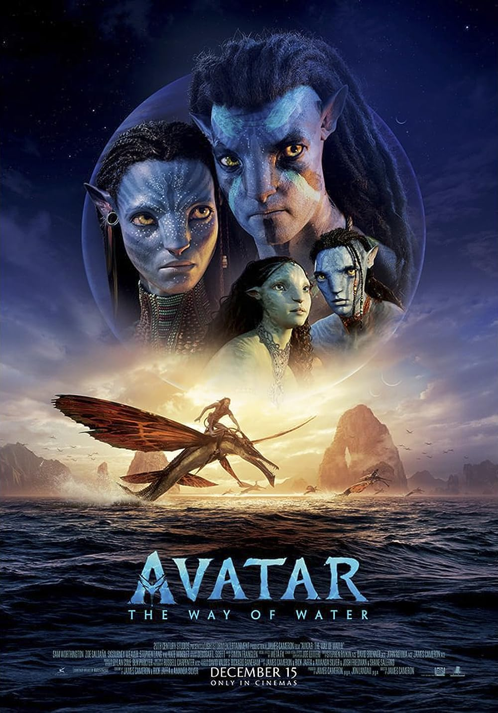

Avatar: El sentido del agua
Género: Ciencia ficcion, Aventuras, Fantástico, Acción | Familia, extraterrestres, Secuela, 3-D
Año de Estreno: 2022
Director: James Cameron
Reparto: Sam Worthington, Zoe Saldana, Sigourney Weaver
Sinopsis: Más de una década después de los acontecimientos de 'Avatar', los Na'vi Jake Sully, Neytiri y sus hijos viven en paz en los bosques de Pandora hasta que regresan los hombres del cielo. Entonces comienzan los problemas que persiguen sin descanso a la familia Sully, que decide hacer un gran sacrificio para mantener a su pueblo a salvo y seguir ellos con vida.